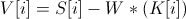

Diferencijska evolucija
PAŽNJA!
Biblioteka JFreeChart koja se koristi je malo veća te stoga i učitavanje appleta prvi puta traje malo duže. Budite strpljivi.
Također morate imati instaliran Java plugin za Vaš preglednik kako biste mogli pokrenuti program.
Evolucijski algoritmi
Pojašnjenje opcija
- Funkcija
-
funkcija koja se koristi kao referentna (služi za stvaranje uzoraka). Neke česte funkcije su
- x^y - x sa eksponentom y gdje je y neki broj
- sin(x) - sinus od x
- cos(x) - kosinus od x
- exp(x) - baza e sa eksponentom x
- Sjeme
-
Cijeli broj koji se koristi kao sjeme za generator nasumičnih brojeva
- Od - Do
-
Granice domene funkcije. Određuje raspon koji se iscrtava
- Broj točaka
-
Broj koji kaže koliko će se točaka izračunati radi crtanja funkcije. Veći broj
točaka, funkcija je bolje iscrtana
- Broj uzoraka
-
Određuje koliko uzoraka stvaramo na za aproksimaciju. Uzorci su jednoliko raspoređeni
po domeni funkcije
- Granice koeficijenata
-
Određuje granice koeficijenata koji se mogu pojaviti. Služi za stvaranje inicijalnih vektora
- Red polinoma
-
Određuje koji je red polinoma kojim se aproksimira skup točaka. Polinom reda 0 je konstanta
- Broj vektora
-
Broj vektora unutar jedne populacije
- Vrsta mutacije
-
Odruđuje kako se računa vjerojatnost p za izvršavanje mutacije. Mutacija se vrši po formuli

gdje su
Moguće mutacije su
-
Binomna - ako je p u rasponu [0,
vjerojatnost mutacije
tada se indeks i mutira, u suprotnom mutirani vektor poprima
vrijednost vektora koji mutira. Vjerojatnost p je uniformno
distribuirani broj u rasponu [0, 1>
-
Uniformna - dok god je p u rasponu [0,
vjerojatnost mutacije
indeks i se mutira. Nakon zadnje mutiranog indeksa, svi ostali
indeksi samo poprime vrijednost vektora koji mutira. Vjerojatnost p
je uniformno distribuirani broj u rasponu [0, 1>
- Vjerojatnost mutacije
-
Određuje vjerojatnost mutacije elemenata vektora. Mora biti u rasponu [0, 1]
- Selekcija
-
Odruđuje kako se selektiraju vektor donor i vektor koji mutira. Vektor donor se
određuje na sljedeći način.
tempVektor = 0
Za i = 0; i < broj parova
prvi = nasumicniVektor()
drugi = nasimicniVektor()
//Tako da prvi i drugi nisu niti jednom do sada selektirani
//tj. svaki vektor se smije koristiti nula ili jedan put
//iz populacije
tempVektor += prvi - drugi
vrati tempVektor
Selekcije vektora koji mutira su sljedeće
- Najbolji vektor - odabire se vektor koji je najbolji u populaciji
- Nasumični vektor - odabire se načumicno neki vektor iz populacije
- Broj parova
-
Određuje koliko parova se koristi za stvaranje vektora donora
- Faktor težine
-
Određuje koliko vektor donor pridonosi promjeni samog vektora koji mutira. Vrijednost je u rasponu
[0, 2]
- Broj generacija
-
Određuje nakon koliko generacija se prestaje sa evoluiranjem populacije
Korišteni alati otvorenog koda
 - vektor donor dobiven
selekcijom
- vektor donor dobiven
selekcijom
 -
Faktor težine
-
Faktor težine